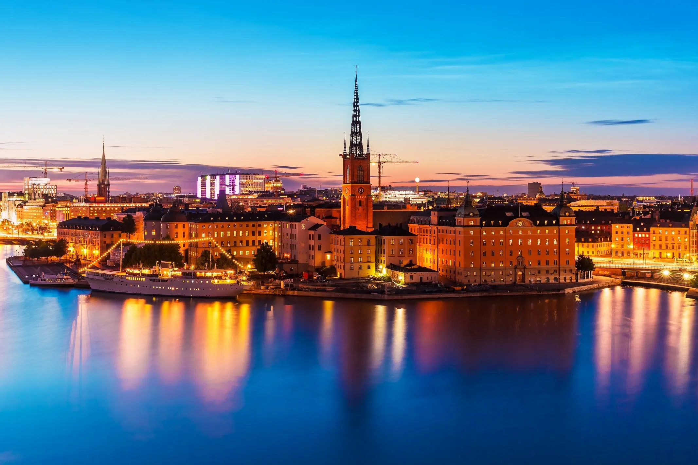

Stockholm (Swedish: [ˈstɔ̂kː(h)ɔlm] i)[8] is the capital of and most populous city in Sweden as well as the largest urban area in the Nordic countries. Approximately 980,000 people live in the municipality,[9] with 2.1 million in the urban area, and 2.4 million in the metropolitan area.[9] The city stretches across fourteen islands where Lake Mälaren flows into the Baltic Sea. Outside the city to the east, and along the coast, is the island chain of the Stockholm archipelago. The area has been settled since the Stone Age, in the 6th millennium BC, and was founded as a city in 1252 by Swedish statesman Birger Jarl. It is also the county seat of Stockholm County. The population of the municipality of Stockholm is expected to reach one million people in 2025.[10]
Stockholm is the cultural, media, political, and economic centre of Sweden. The Stockholm region alone accounts for over a third of the country's GDP,[11] and is among the top 10 regions in Europe by GDP per capita.[12] Ranked as an Alpha− global city,[13] it is the largest in Scandinavia and the main centre for corporate headquarters in the Nordic region.[14] The city is home to some of Europe's top ranking universities, such as the Karolinska Institute, Stockholm School of Economics, KTH Royal Institute of Technology and Stockholm University.[15][16] It hosts the annual Nobel Prize ceremonies and banquet at the Stockholm Concert Hall and Stockholm City Hall. One of the city's most prized museums, the Vasa Museum, is the most visited non-art museum in Scandinavia.[17][18] The Stockholm metro, opened in 1950, is well known for the decor of its stations; it has been called the longest art gallery in the world.[19][20][21] Sweden's national football arena is located north of the city centre, in Solna. Avicii Arena, the national indoor arena, is in the southern part of the city. The city was the host of the 1912 Summer Olympics.
Stockholm is the seat of the Swedish government and most of its agencies,[22] including the highest courts in the judiciary,[23][24] and the official residencies of the Swedish monarch and the Prime Minister. The government has its seat in the Rosenbad building, the Riksdag (Swedish parliament) is seated in the Parliament House, and the Prime Minister's residence is adjacent at Sager House.[25][26][27] Stockholm Palace is the official residence and principal workplace of the Swedish monarch, while Drottningholm Palace in neighboring Ekerö serves as the Royal Family's private residence.[28][29]